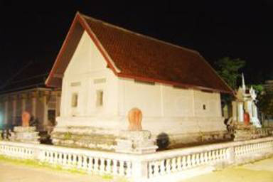

เมนู |
วัดเขาขุนพนมและศูนย์วิทยาศาสตร์เพื่อ การศึกษาเขาขุนพนม ตั้งอยู่หมู่ที่ 3 ตำบลบ้านเกาะ จากตัวเมืองใช้ทางหลวงหมายเลข 4016 ถึงกิโลเมตรที่ 21 ผ่านตลาดพรหมโลก มีทางแยกขวาไปอีก 2.5 กิโลเมตร วัดเขาขุนพนม เป็นวัดที่มีความสำคัญทางด้านประวัติศาสตร์และโบราณคดี มีถ้ำซึ่งมีกำแพงก่ออิฐถือปูน และใบเสมาเช่นเดียวกับกำแพงเมือง ผนังด้านหน้ามีลายปูนปั้นประดับเครื่องลายครามจีน ในถ้ำมีพระพุทธรูปสำริดประมาณ 30 องค์ และพระพุทธบาทสำริด ถ้ำในวัดแห่งนี้มีหลายถ้ำทะลุถึงกัน สันนิษฐานว่าเป็นที่ประทับของสมเด็จพระเจ้ากรุงธนบุรี แต่บางท่านก็ว่าเป็นที่พักผ่อนสำหรับเจ้าหญิงเกศิณีธิดาของเจ้านราสุริยวงศ์ เจ้าเมืองนครศรีธรรมราช ช่วง พ.ศ. 2312 – 2319 
|
| หน้าแรก | |
| วัดพระมหาธาตุ วรมหาวิหาร | |
| วัดเขาขุนพนมและศูนย์วิทยาศาสตร์เพื่อ การศึกษาเขาขุนพนม | |
| ศูนย์ศิลปาชีพบ้านเนินธัมมัง | |
| ศาล หลวงต้นไทร | |
| สวนสมเด็จพระศรีนครินทร์ 84 (ทุ่งท่าลาด) | |
| แหลมตะลุมพุก | |
| วัดแม่เจ้าอยู่หัว (พระนางเลือดขาว) | |
| เขื่อนบ้านพ่อ ปากพนัง | |
| น้ำตกกรุงชิง | |
| ล่องแก่งคลองกลาย | |
| อ่างเก็บน้ำจุฬาภรณ์ | |
| วัดอาตาปีคีรีเขต (วัดถํ้าเพด้าน) | |